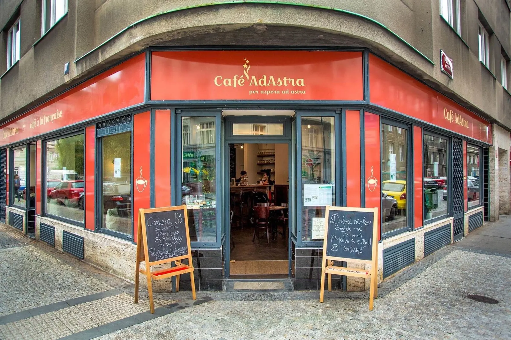
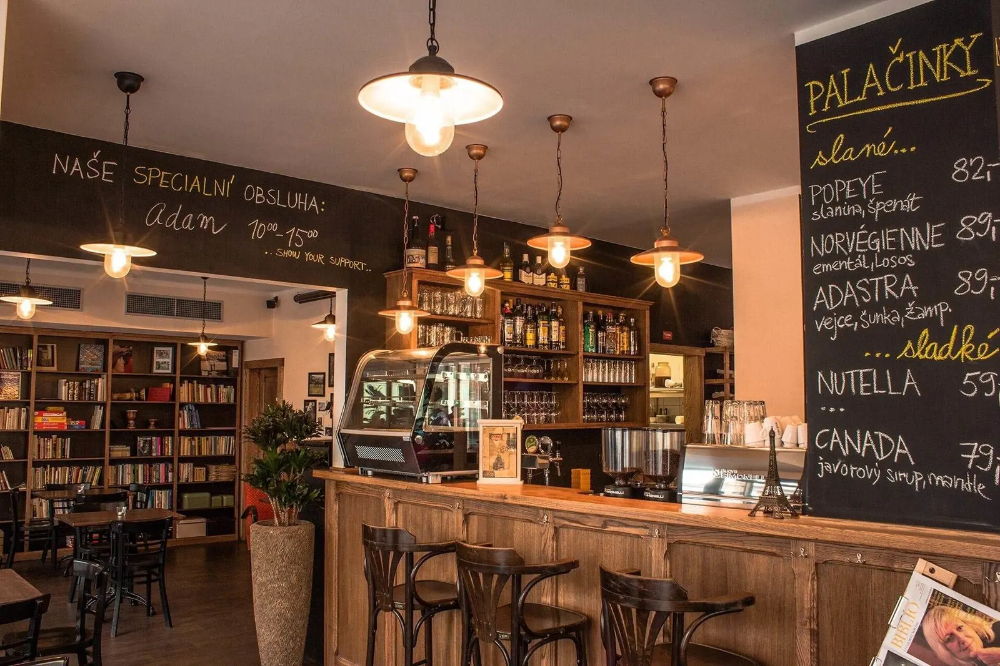
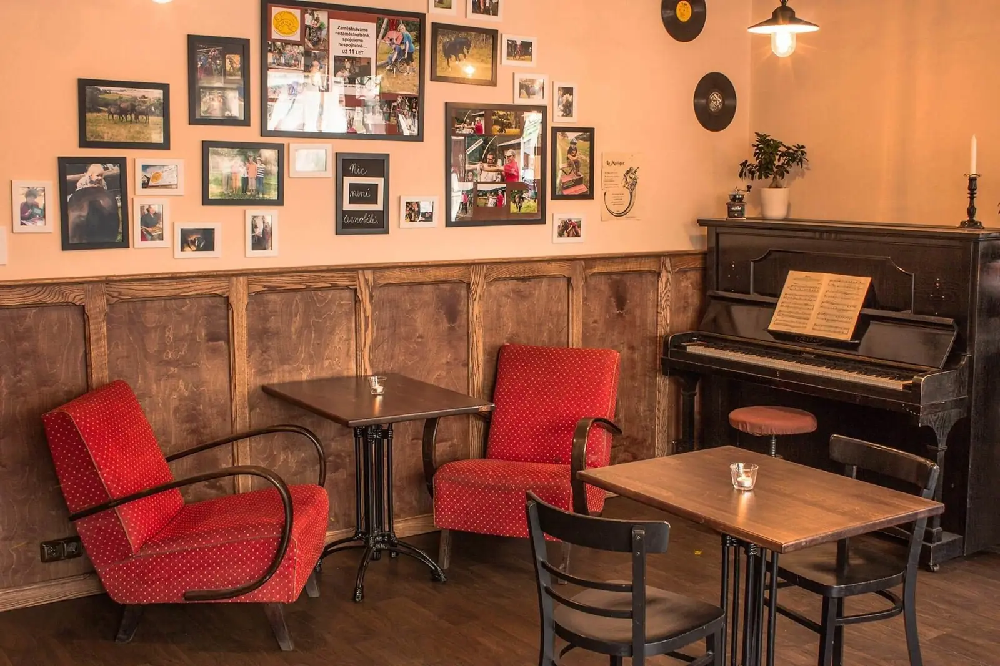

Café AdAstra
Kavárna a bistro v Podskalí. Přes den káva a polední menu, večer klavír.Každý večer klavír. Zahrát si na něj můžete i vy.
Po–St 11–22, Čt–Pá 11–23, So 10–23
Dnes
Pátek 9. října
Dnes večer klavír. Zahrát si na něj můžete i vy.
Program
Celý program-
9. 10.pátek, 18:00–20:00
Křest knihy „Mami, kočky a autisty nepředěláš“
Beseda s autory knihy Dagmar Edith Holou a Jakubem Holým, s hudebním doprovodem.
-
17. 10.sobota, 20:00
Travesty show
Jste srdečně zváni.
-
Každý večer
Klavír
Zahrát si na něj můžete i vy.

O kavárně
Kavárnu v Podskalí od roku 2015 provozuje obecně prospěšná společnost Zajíček na koni. Pracuje tu 36 kavárníků, lidí s handicapem, v kuchyni, za barem i v obsluze.
Pronájem a rauty
Celou kavárnu nebo salonek si můžete pronajmout na oslavu či firemní večer. Rauty dovezeme i k vám.